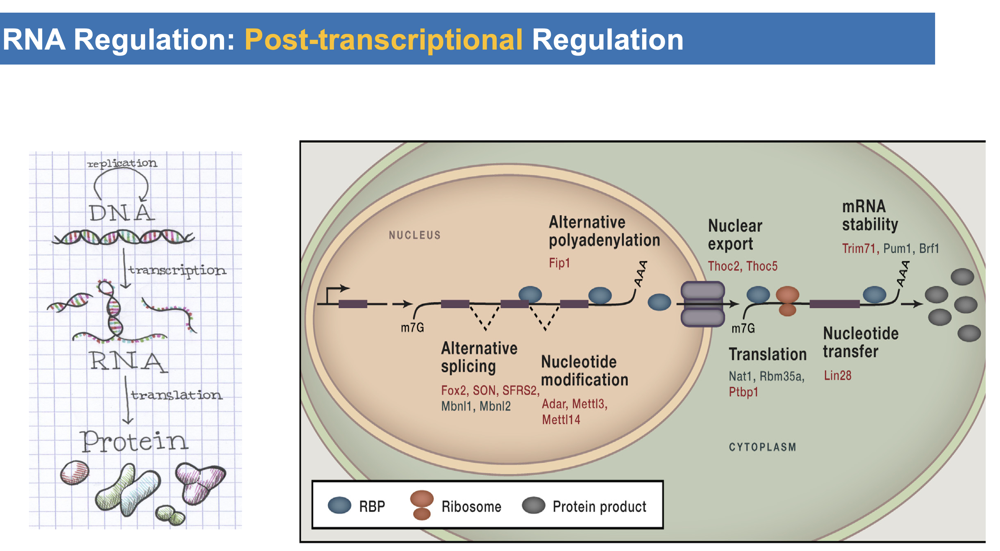
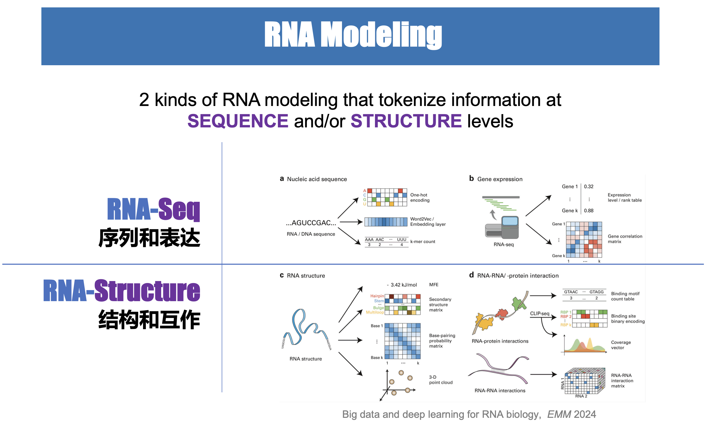
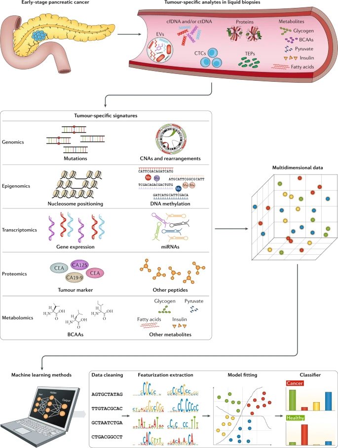
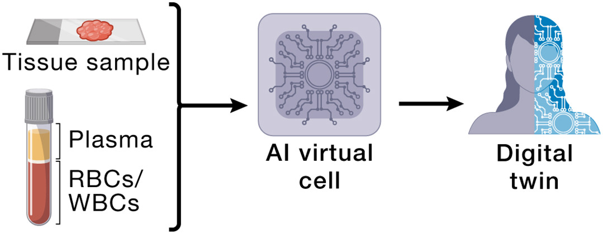

课题背景和方法
[ English | 中文 ]
Background
noncoding RNA (ncRNA): 人类有大约2万个蛋白编码基因，但其序列的总长度仅占人类基因组总长度的1.5%左右。另一方面，人类基因组序列的~70%甚至更多都会被转录成RNA，它们很多都是非编码的RNA（noncoding RNA，ncRNA)。但对于为数众多的非编码RNA (ncRNA)，我们仍然知之甚少。
”截止2020 年，ENCODE 项目已鉴定出约 37,600 个非编码RNA的基因，这几乎是蛋白质编码基因的两倍。其他统计数据相差很大，从约 18,000 个到接近 96,000 个。... 在 2024 年《科学》杂志的一篇评论中，将这些发现描述为 RNA 革命 的一部分。... 这些非编码RNA动摇了我们对生物学运作方式的理解。自从关于 DNA 双螺旋结构及其如何编码信息的划时代发现以来，分子生物学的基本思想一直是，生物体存在精确编码的指令，这些指令可以对特定分子进行特定任务编程。但非编码RNA 似乎指向了一种更模糊、更集体的生命逻辑。这种逻辑更难辨别，更难理解。但如果科学家能够学会适应这种模糊性，这种关于生命的观点可能会更加完整。“ （ RNA: 掌控生命后台 | 《环球科学》 2024年7月刊封面文章）
double-stranded RNA (dsRNA): 著名的非编码RNA有miRNA/siRNA/piRNA这三类small RNA，他们是通过双链RNA（dsRNA）加工生成的不同RNA类型。双链RNA（double stranded RNA, dsRNA）是一种由两条互补RNA链组成的分子，RNA干扰的启动通常需要双链RNA（dsRNA），这些双链RNA可以是外源，如病毒等微生物（Microbes），引入的，也可以是内源的，如人类基因组里的重复序列（Transposable Elements）等，产生的。随着科研的进展，人们发现双链RNA（dsRNA）远不止上述3种。这些不同的dsRNAs在免疫系统中具有重要作用，尤其是在抗病毒和抗肿瘤免疫反应中。比如，srpRNA就通过癌症微环境的外泌体运输发挥细胞间的调控功能。
Microbial RNA (mbRNA): 关于微生物RNA的研究表明，细菌、病毒及其他微生物会产生多种RNA分子，这些分子能够影响宿主的健康与疾病进程。细菌中的小RNA（sRNA）调控毒力基因、应激反应和抗生素耐药性，从而参与结核病和脓毒症等感染性疾病的发生。某些病毒编码的RNA（包括类似miRNA的分子），例如Epstein–Barr virus，可以调节宿主免疫通路，并在淋巴瘤等疾病中促进肿瘤发生。高通量测序技术的发展，尤其是宏基因组和宏转录组（Meta-transcriptome of Microbes）方面的研究进展，使研究人员能够鉴定与炎症性肠病、癌症等疾病相关的微生物RNA特征。对这些RNA介导机制的深入理解，正推动RNA诊断方法、疫苗和靶向抗菌治疗策略的开发。
More Reading: dsRNA code

Different types of dsRNAs in immune response
RNA regulation in immune system: RNA不仅在转录时被动态调控，而且在被转录后也会有着非常复杂而精细的调控工程，例如剪接，修饰，细胞定位，编辑，加尾，降解等等。而这些又和RNA自身的结构以及识别RNA序列和结构的蛋白息息相关。同时，RNA，尤其是非编码 RNA (ncRNA)，还会调控其他大分子，从而在人体对病毒的免疫应答以及癌症免疫等重要生命过程中发挥作用。我们在癌症、自身免疫等复杂性疾病中探索这些复杂的调控过程，并应用于免疫治疗。
{kind=link}

RNA Regulation: Post-transcriptional Regulation
Methods
RNA Modeling: 我们利用最新的人工智能技术从“序列”和“结构”两个不同的表征层面开发各类核酸模型，去发现和理解RNA在复杂的生物分子互作和调控网络中的作用和机制。
{kind=link}

RNA Modeling
Multi-modal data integration: 更进一步，我们可以通过生物信息分析计算得到多模态数据（例如表达、剪接、编辑、融合等）。对于这些多维度、多模态的高通量数据（例如multi-omics数据），我们需要进行4个步骤来进行机器学习等分析，包括 1) Data Cleaning, 2) Feature extraction and engineering, 3) Model Fitting, 4) Classifier。我们针对这4个步骤开发相应的生物信息学方法、软件、数据库等工具，例如，我们探索和利用大语言模型和深度学习模型等新型AI 技术，进行多模态数据整合。
{kind=link}

Multi-dimensional data for liquid biopsy of cancer (Heitzer et al., Nature Reviews 2019)
Virtual Cells & Digital Twins: 再进一步，我们可以构建整合多组学、影像学和临床数据的计算模型，在计算机中模拟细胞及人体生理行为。虚拟细胞模型致力于刻画基因调控、信号通路、代谢过程以及细胞间相互作用，从而在无需大量湿实验的情况下进行机制探索和假设验证。数字孪生则进一步将其发展为以患者为中心的个体化模型，可用于模拟疾病进展和治疗反应，推动精准医学的发展。总体而言，虚拟细胞和数字孪生技术正在深刻改变药物研发、生物标志物发现以及个体化治疗决策的方式。
{kind=link}

2024 Cell - How to build the virtual cell with artificial intelligence - Priorities and opportunities